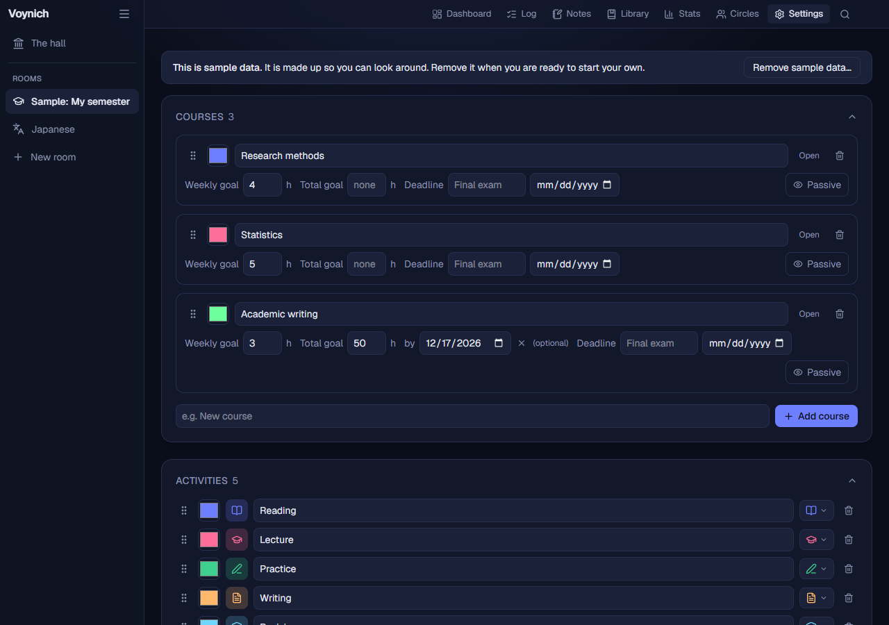
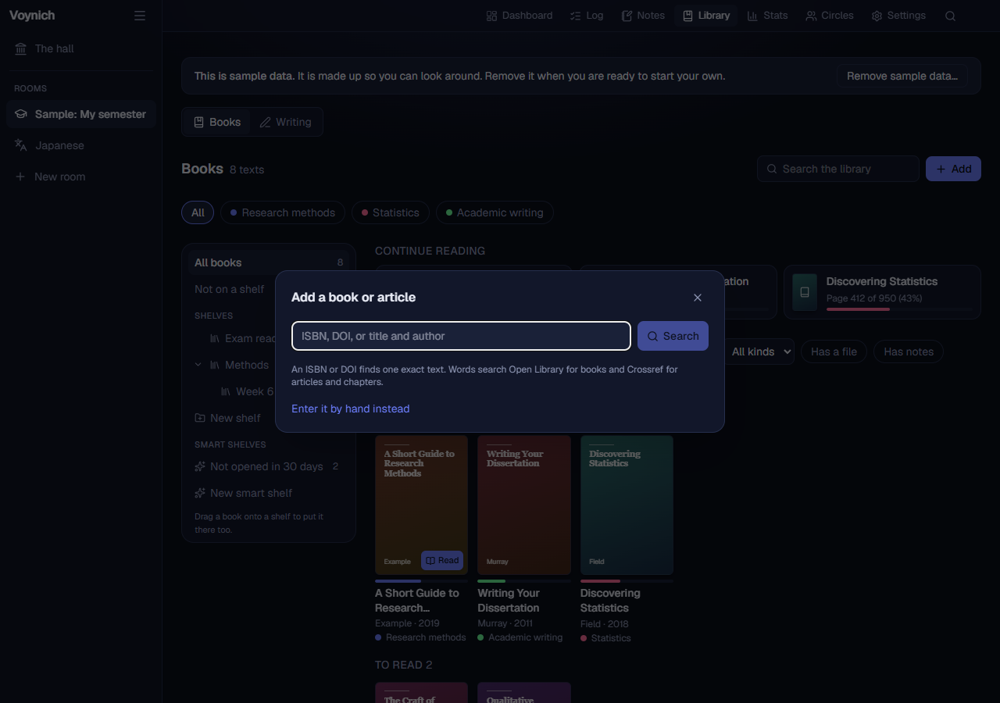

Getting started in ten minutes
Install Voynich, make your first room, log some time, set a goal, write a note, add a book and keep your data safe. Each step is short. When you want every detail, the full manual has them.
-
Install it
Download for Windows Download for Mac
Open the file you downloaded. If Windows says “Windows protected your PC”, choose More info and then Run anyway (the program is not signed with a paid certificate). Click Next and Install; it needs no administrator rights. When it finishes, Voynich opens in your web browser, and a small Voynich icon appears near the clock. Click that icon to open Voynich again later; right-click it to quit.
On a Mac, open the disk image and drag Voynich onto the Applications folder. The first time, macOS asks you to allow it once (how); then Voynich opens in your browser and a small clock icon appears in the menu bar at the top right. Click it to open Voynich; Control-click it to quit.
You can also start it from the Start menu (on a Mac, from the Applications folder). Voynich only answers to your own computer: nobody else can open it, unless you turn on Use Voynich from your phone in App settings and pair your phone (see Your phone in the manual).
-
Make your first room
The first time, Voynich shows a welcome page. Pick the closest starting point: a language I am learning, my studies (courses or a degree), research or a thesis, or something else. Give your room a name, say what each part of it is called (a Course, a Language, a Topic), and if you know them, type your first ones separated by commas. Then press Create my room. You can change all of it later in Settings.

The welcome page. “Try it with sample data” adds a made-up semester to look around in, and a banner removes it again with one click. -
Log your first session
On the Dashboard, choose a course (or language) and an activity, then press Start. The timer runs even if you close the tab; Voynich finds it again when you come back. Pause stops the clock without ending the session, and Stop & save saves it. Started late? Started earlier? moves the start back by 5, 10 or 15 minutes or more. Repeat last starts the same course and activity as your last session in one click.

A session in progress. Forgot to start the timer? Open Log and use Add a past session: pick the course, the activity, the date, the time and the minutes.
-
Set a goal
Open Settings. Each course has a Weekly goal in hours (it shows on the Dashboard as a progress bar) and an optional Total goal with a finish date; Voynich then tells you how many hours a week it takes to get there. Further down, This room has a Daily goal, which the Today card on the Dashboard measures your day against.

Courses and activities in Settings. -
Write a note that links to others
Open Notes and click New note. Select text and use the toolbar to format it, or paste a screenshot straight in. Tie the note to one or more of your courses, and press Ctrl+Enter to save. To link to another note, type its title between double brackets, like
[[Sampling]]. Each note then shows which notes link to it. Switch from Cards to Graph to see how everything connects.
The notes graph. -
Add a book
Open Library, Books and press Add. Type an ISBN to find one exact book, a DOI to find an article, or some words to search Open Library (books) and Crossref (articles). Check the details and save. If nothing is found, press Enter it by hand instead. Then set its status (To read, Reading, Paused, Read), and type the page you are on in Now on page; Voynich works out your pace and how long is left. Pick the book in the timer, and the time you spend counts towards it.
Have the book as a PDF or EPUB? Edit the book and choose Attach a PDF or EPUB, then press Read: it opens in Voynich, at the page where you stopped. Write notes beside it, highlight and quote words with their page, and, with the AI tab on, ask about what you are reading. See Reading in the manual.

Adding a book. The search only runs when you press Search. -
Watch your progress
Stats shows daily study time (7 days up to a year), split by course if you like, how this week compares with last week, and the totals by course and by activity. The hall’s Stats (the hall is at the top of the sidebar) combines every room you have.

Stats, showing 30 days. -
Keep your data safe
Voynich saves a copy of your data automatically once a day and keeps the last 14. In App settings, Data and backups you can press Back up now, put any saved copy back with Restore, bring in a file from anywhere on your computer with Import from a file (it shows what is in the copy first, and keeps what you have now so the restore can be undone), and download everything as one file, as a zip of readable data, or your sessions as a spreadsheet. The saved copies are on the same computer as your data, so now and then copy that folder somewhere else. The PDFs and EPUBs of your books are not in the saved copies; tick Include my books to add them to the complete copy.

Data and backups.


Where to go next
- The full manual explains every part of the program, including the AI tab, themes, exports, updates and what to do when something goes wrong.
- Wondering what leaves your computer? Almost nothing, and the manual lists all of it. Inside Voynich, App settings, Privacy shows it with your own settings.
- Stuck? See Troubleshooting, or write to clite.ka@gmail.com.